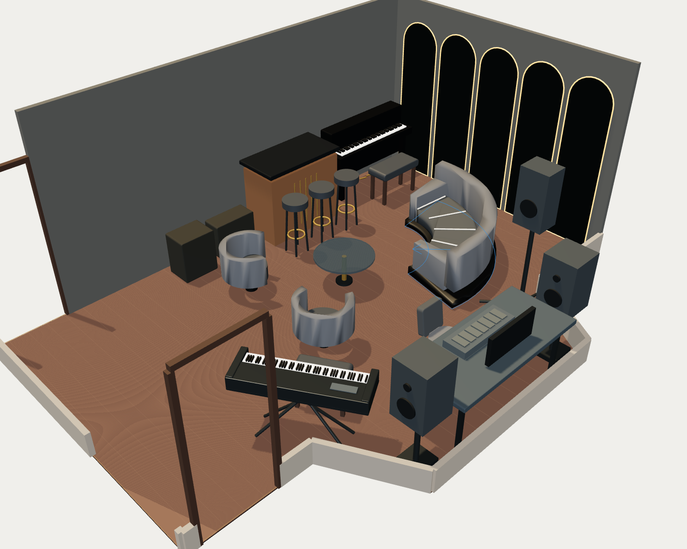
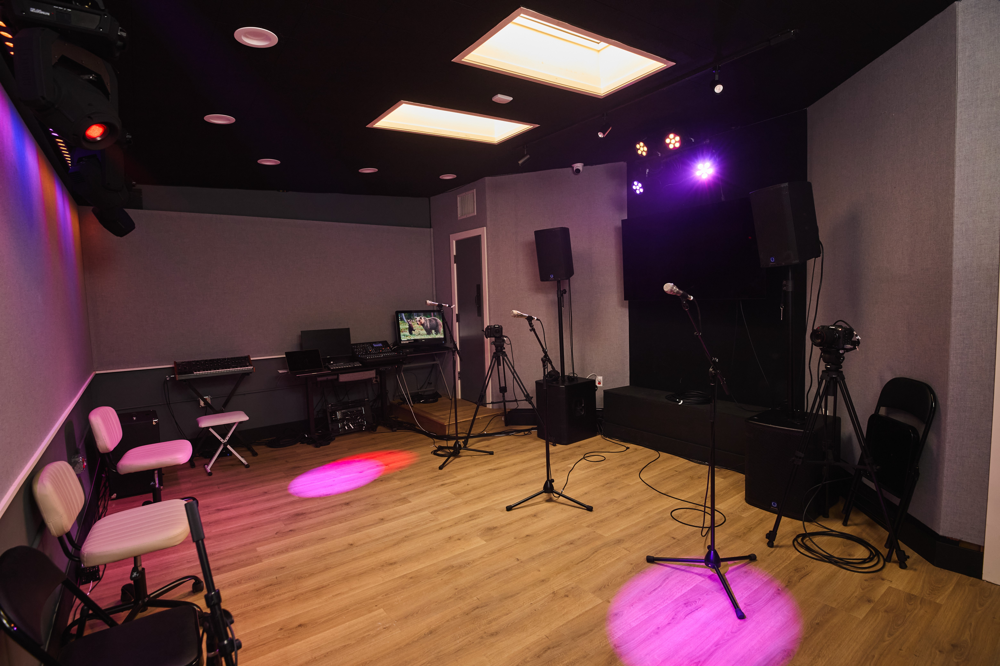
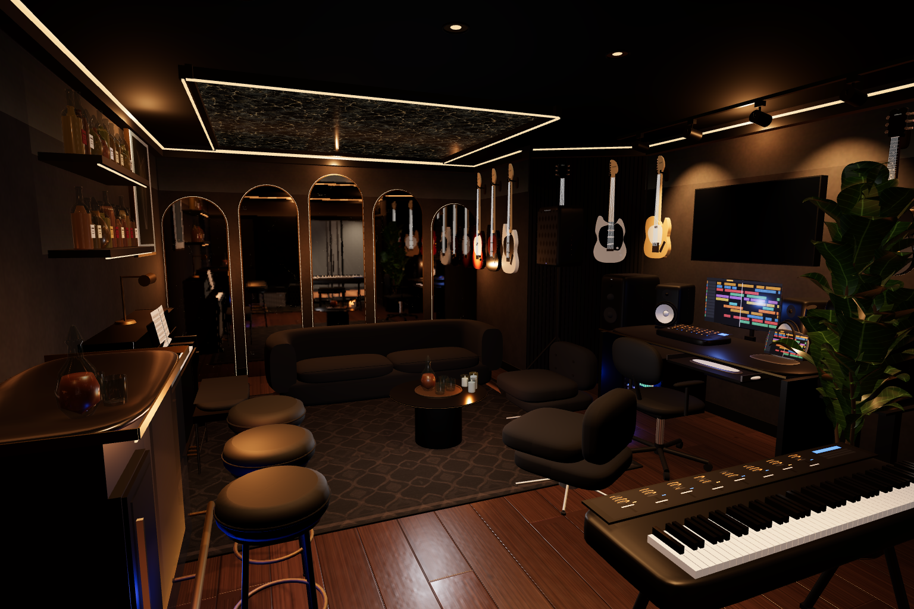

00:00 to 00:25
The correction
Rough model, approved concept, real room, blunt prompts, and the finished guide.
✅ Assets ready

“make the furniture accurately sized and shaped!!”VERBATIM PROMPT
“you still have to do better”VERBATIM PROMPT
“i mean EVERYTHING - all the walls mirrors desk every last detail of the room needs to be found and priced out”VERBATIM PROMPT




d78ad64 establishes the repo and its design direction.761686c packages seven drawings and a 32-page guide.d6c2f4a, 9bf7ca3, and 96f6bbe preserve the editable planner, full room, and source-matched furniture work.79ec3cc records both raised areas. The request remains staged, not sent.f8f4250 adds accurate affordable furniture and the complete current material installation guide.TRC-Room-For-Revision/
00_ADMIN/
01_PROJECT_EVIDENCE/
02_VIDEO/
before/
survey/
trade-development/
construction/
reveal/
03_AUDIO/
04_SCREEN/
05_STILLS/
06_EDIT/
07_DELIVERY/
hero-16x9/
cutdowns-9x16/
cutdowns-1x1/
captions/
thumbnails/
YYYYMMDD_STAGE_CAMERA_SHOT_TAKE.ext
20261012_SURVEY_A_MEASURE-M16_T02.mov
| Line | Allowance | Condition | Project-cap treatment |
|---|---|---|---|
| Studio assistant capture | $200 | 8 paid hours at $25 per hour, spread across milestones. | Included inside $25,000. |
| Editing support | $640 | 16 paid hours at $40 per hour, one revision round. | Included inside $25,000. |
| Storage or music-rights reserve | $160 | Spend only if existing storage or a cleared TRC-owned track cannot cover delivery. | Unspent cash stays in the room budget. |
| Maximum incremental cash | $1,000 | 24 paid hours, existing equipment, simple proof graphics. | Hard ceiling, no automatic spend. |